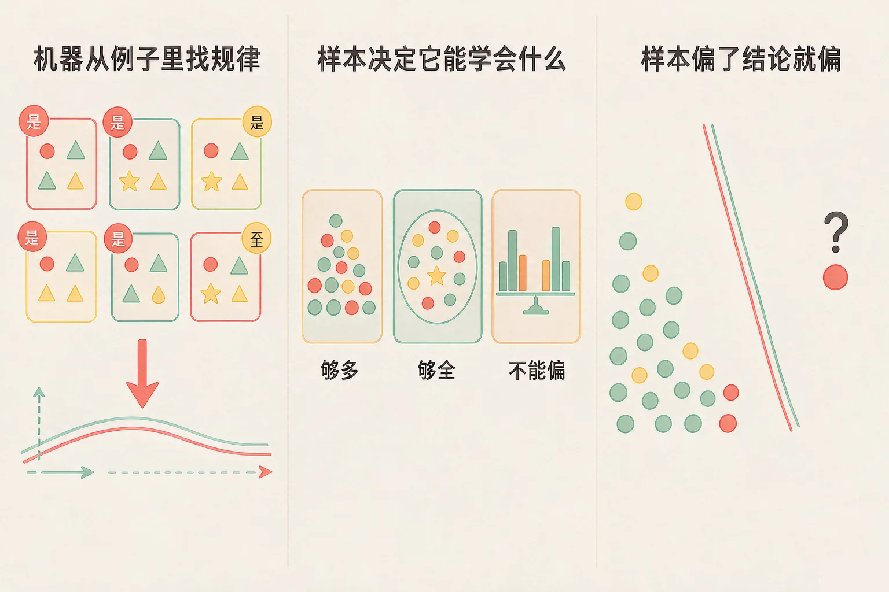
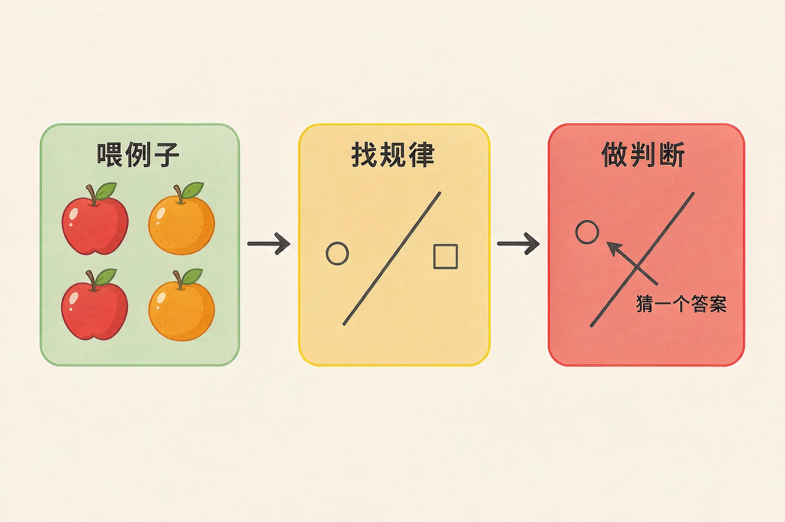
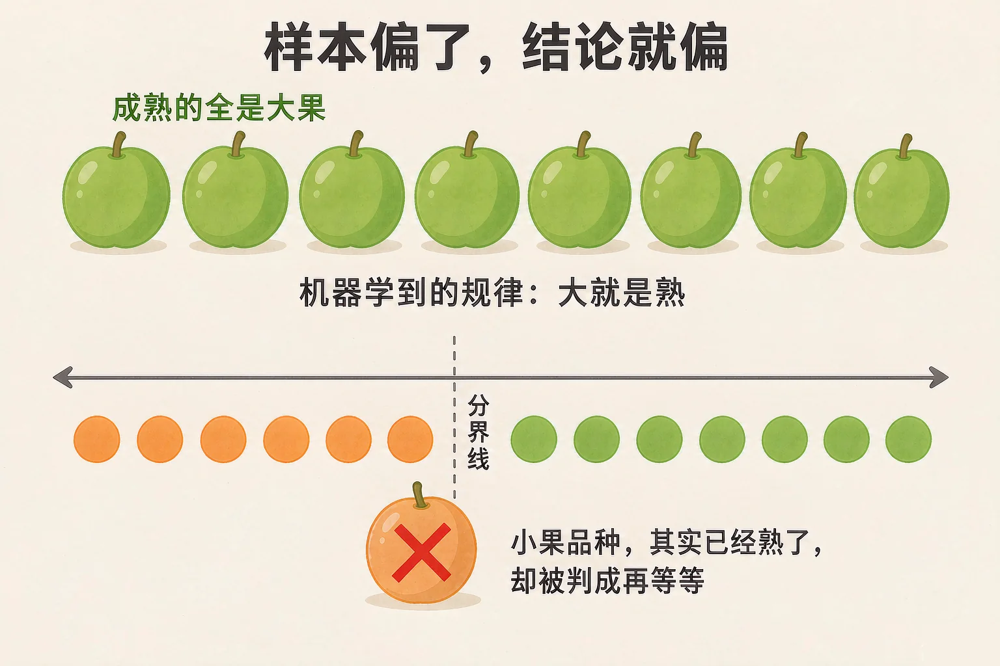

Gallery
v1.0.0 · skill v7.22.0
小学六年级 · 互联网与人工智能
机器没有眼睛，也没上过一天学，它凭什么能认出照片里的猫？

选一个你真正好奇的问题，后面的动手实验都会围着它转。
选择或输入后，这节课会围绕你的问题展开。
先凭直觉选一个，选完立刻看到解释——错了也没关系，正好知道要重点听哪里。
1. 相册能自己认出照片里的猫，最接近下面哪种说法？
机器是从大量带标签的例子里找规律。一条条写死规则是不现实的——猫的样子太多，写不完。错因提醒：常见错误是误认为「工程师把规则一条条写好了」。真正的做法是给它例子，让它自己找。
2. 一个识别水果的机器，只在例子里见过红色的苹果。给它一个青色的苹果，会怎样？
机器只会它见过的样子。样本里没有青苹果，它就没有依据把青苹果判成苹果。错因提醒：容易误认为「机器自己会举一反三」。举一反三要靠样本覆盖到，不会凭空发生。
3. 关于机器给出的判断，下面哪句话更准确？
机器给的是按规律算出的最可能答案，所以样本变了、规律变了，判断就会跟着变。错因提醒：这里最容易搞混的是「算得快」和「看得懂」。算得快不等于真的理解了，出了错也不一定是坏了——多半是它见过的例子不够。
为什么要学这一课？
我们身边已经有很多「会认东西」「会猜你想打什么」的功能（And）；可它有时候答得离谱，让人摸不着头脑，是因为我们不知道它是怎么得出结论的（But）；所以要看清楚它的三步走——喂例子、找规律、做判断（Therefore）。
把这件事拆开，其实只有三步：

🔍 深层理解 换个角度再看一遍这件事，看看能不能说出背后的原理。
拆开它：把「人工智能」这四个字拆掉，剩下的其实是：一大堆带答案的例子，加一条从例子里找出来的规律。两样都离不开人。
比较它：人认识一只猫，看两眼就够了；机器要看成千上万张。它靠的不是聪明，是数量。
迁移它：以后遇到一个新功能，先问一句：它可能是拿什么例子学出来的？想得出例子，就大致想得到它在什么情况下会出错。
先在下面选好这一颗要标成什么，再到图上点一下，就喂给机器一个带标签的例子。鼠标在图上移动，还能看到它此刻会把那儿判成什么。
先在图上点几下试试。一开始机器没有例子，什么也说不出来。
机器能学会的东西，不会超过你给它的例子。所以准备例子要守住三条。
① 要够多
只见过三五个例子，它的判断会非常随便——离哪个例子近，就听哪个的。
② 要够全
真实世界里会遇到的各种样子，都得让它在例子里见过，不然就是没见过。
③ 不能偏
例子里只有一种样子，它就会把这种样子当成全部的规律——这是最容易出大错的一条。

有同学会想：「先随便拍几张，不够再加。」可问题是，你根本不知道哪里不够——机器不会告诉你「我没见过这种」。它只会照着自己那点经验，自信地给出一个答案。所以准备样本这件事，要在训练之前就想清楚。
上面这台分拣机，是照着十二个例子学出来的。下面三个果子，点一下就让机器判一次。注意看第三个。
题目：学校想做一个识别广告的小助手。请说明它要学会哪件事、需要准备什么，并指出一个最容易被忽略的风险。
只统计「它在训练时答对了多少」。这个数字好看不代表它学会了——如果考它的题目和它见过的例子几乎一样，它当然答得对。真正要看的是：换一批它没见过的新例子，它还答得对吗？
先凭直觉选一个，选完立刻看到解释——错了也没关系，正好知道要重点听哪里。
1. 有同学说：「机器出错，说明这个机器坏了。」这个说法的问题在哪？
机器是照着学到的规律猜答案。遇到规律没覆盖到的情况，它只能硬猜，所以会出错。错因提醒：最常见的错误是误认为「出错＝故障」。大部分时候不是坏了，是训练时没见过这一类例子。
2. 要让一个识别水果的机器认得青苹果，最直接的办法是：
机器靠例子学规律，不是靠听人讲道理。补进青苹果的例子，它才有可能学到这一种。错因提醒：容易把「跟人讲道理」和「给机器喂例子」搞混。机器听不懂道理，它只从例子里总结。
3. 一批训练例子全是「晴天中午拍的花」，会带来什么问题？
样本偏了，结论就偏。只用一种光照条件下的例子训练，它就只认得那种样子。错因提醒：这里最容易犯的是误认为「越清楚越好」——清楚当然好，但只有一种清楚，还不如各种条件都有一点。
下面有十条候选做法。点一下卡片就能选上或者取消，把你认为该用的挑出来，再点「检查我的清单」。
先点卡片，把你认为该用的做法选出来。
检查完以后想一想，说给同桌听：
十条里有四条是不该用的。它们看着都很省事，可每一种都会让样本变偏。你能说清楚每一条会让机器「偏」在哪里吗？
先凭直觉选一个，选完立刻看到解释——错了也没关系，正好知道要重点听哪里。
1. 有个识别器只见过自家小区里的那几只猫。换一只从没见过的品种，它多半会怎样？
样本覆盖不到的样子，机器就没有依据。它只会把新东西硬塞进它见过的某一类里。错因提醒：常见错误想法是「都是猫，应该没问题」。对机器来说，它比的不是「像不像猫」，而是「像不像它见过的那些猫」。
2. 一份训练样本里，九成照片都是同一个车型。这样做出的识别器最可能的问题是：
类别之间样本数量悬殊，机器会明显偏向样本多的那一类。这是「样本偏了，结论就偏」最典型的样子。错因提醒：容易把「样本数量」当成和判断无关的事。数量也是样本的一部分，不均衡就是偏。
3. 下面哪句话，最准确地说明了机器和例子的关系？
机器的「知识」几乎全部来自它见过的例子。样本窄，它的世界就窄；样本变了，它的结论就跟着变。错因提醒：这里最容易搞混的是「快」和「会」。算得快只是算得快，它并不会因为算得快就多懂一点。
回到开头那个问题：相册能认出猫，是因为它见过成千上万张被标好的猫的照片。它没有变聪明，它只是见得足够多。而换一只它从没见过的样子，它一样会认错——所以现在我们知道了：它的本事，是我们用例子喂出来的。
给别人讲一遍：请用「喂例子、找规律、猜答案」这三步，说清楚相册为什么能认出猫。
再动一动手：找一找——你身边还有哪三个功能可能是这样学出来的？各写下一个它可能会认错的情况。
三层练习，做完第一、二层就算通关；第三层留给愿意继续探索的同学。
⭐ 基础巩固（必做）
⭐⭐ 能力应用（必做）
⭐⭐⭐ 迁移挑战（选做）
左边是学它之前要先会的，右边是学会之后可以继续探索的，下面是同一领域的伙伴知识。
图谱正在加载：首次进入需下载知识索引（约 1–3 秒），加载完成后本行会自动消失。